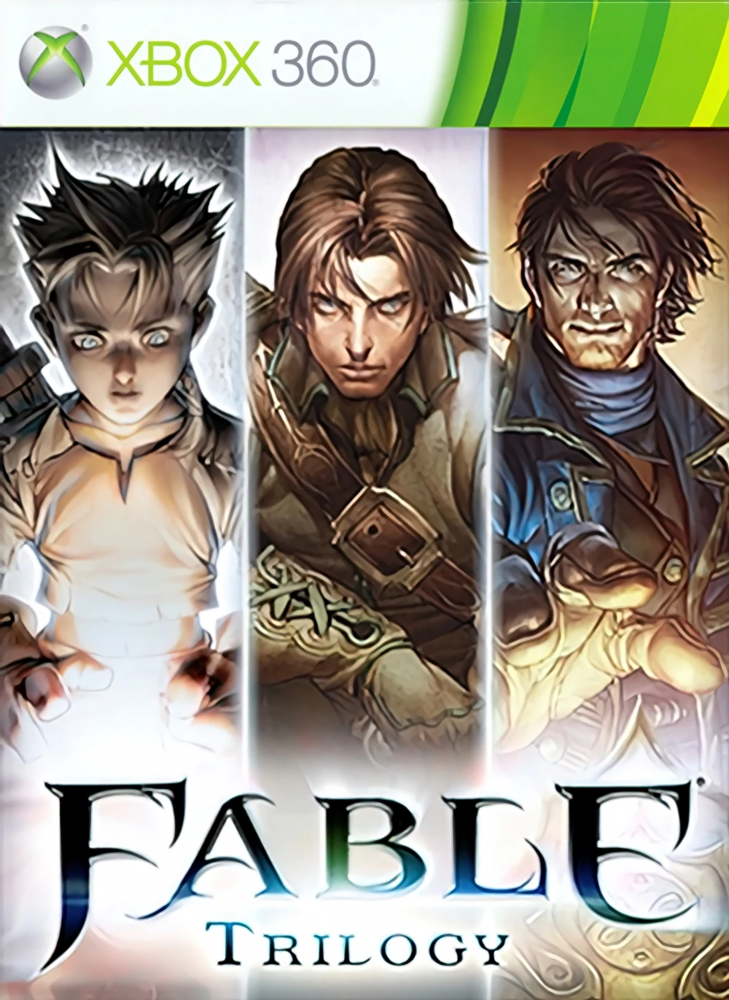

Fable takes place in the fictional nation of Albion. Players assume the role of an orphaned boy who realizes his dream of becoming a Hero. The choices players make in the game affect the perception and reaction to their Hero by the characters of Albion, and change the Hero's appearance to mirror what Good or Evil deeds the Hero has performed. In addition to undertaking quests to learn what happened to the Hero's family, players can engage in optional quests and pursuits such as trading, romance, and theft.
